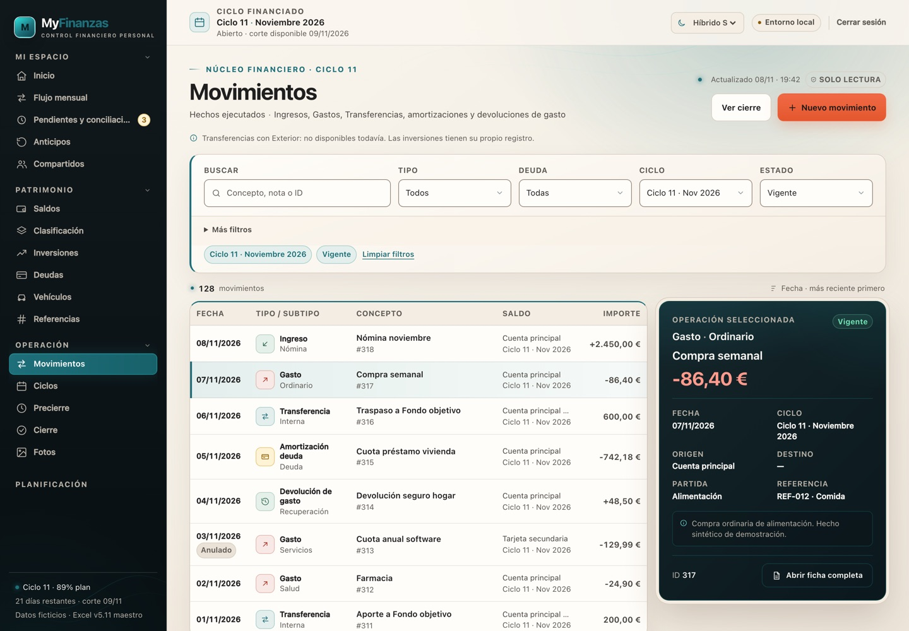
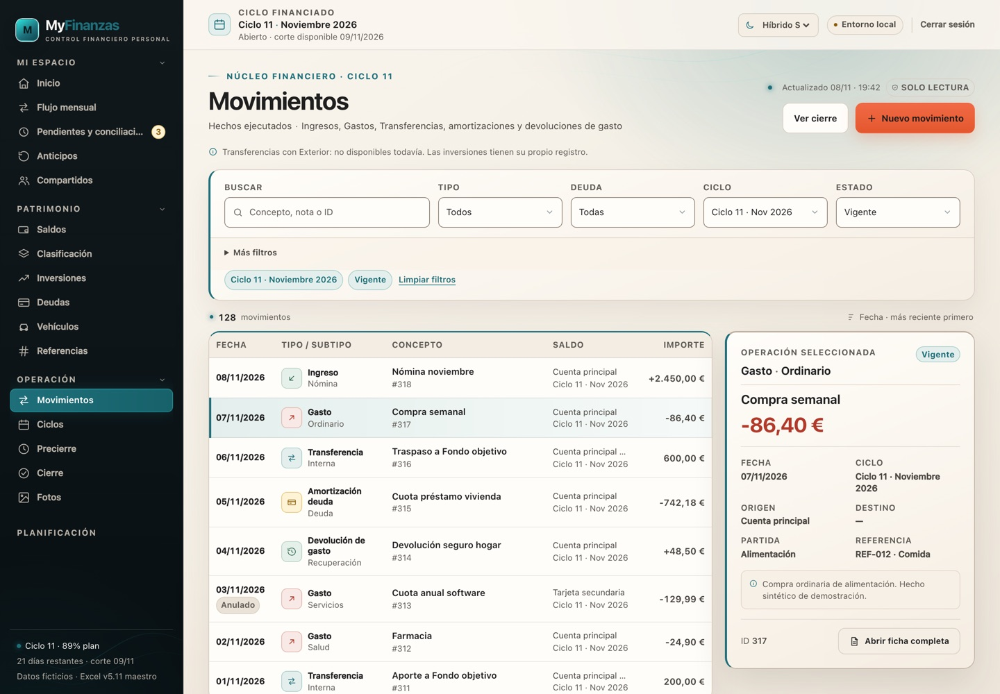

MyFinanzas · Corrección aprobada
Hybrid · Detalle claro
El detalle abandona el petróleo y gana contraste en encabezados, bordes y selección.
Capturas 1440 × 1000. Solo cambia la superficie del panel; se conservan los campos, el comportamiento y los datos.


Antes
El panel oscuro se separaba del workspace claro y competía con el héroe de Inicio.
Después
Superficie clara, borde izquierdo teal, encabezado separado y badge de estado; más contraste que Light sin volver al fondo oscuro.
Qué no cambia
Mismos campos, misma selección y mismo comportamiento. El contraste se reserva al héroe financiero.